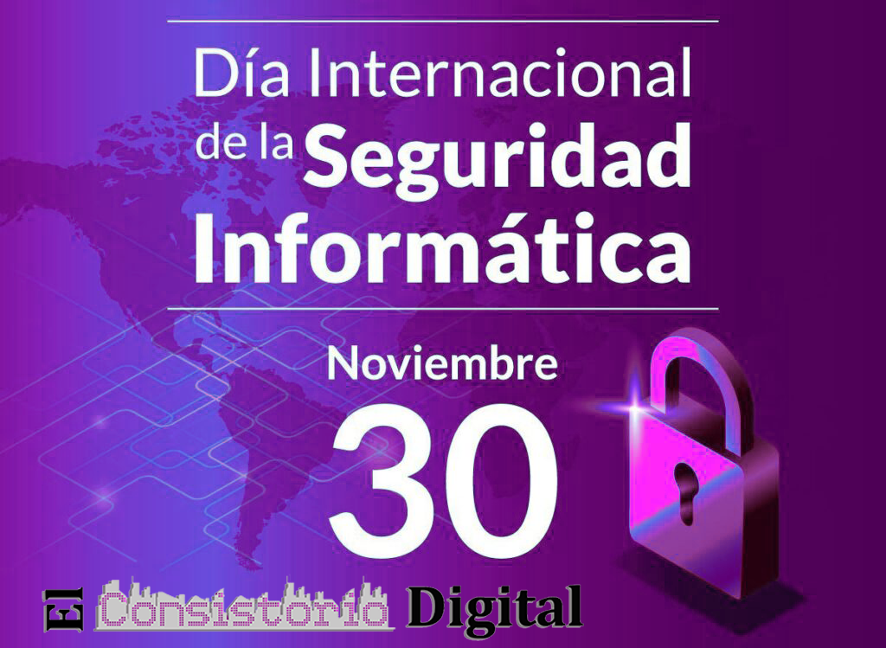

Comprobador y generador de contraseñas
Calificación: —
Longitud: 0
Generador avanzado
Valor: 16
Protege tu identidad: contraseñas fuertes y buenas prácticas
Un día para crear conciencia sobre la importancia de proteger cuentas y datos personales. Aprende cómo crear contraseñas seguras, usar 2FA y administradores de contraseñas.
Consejo rápido: usa frases largas y un gestor de contraseñas.
